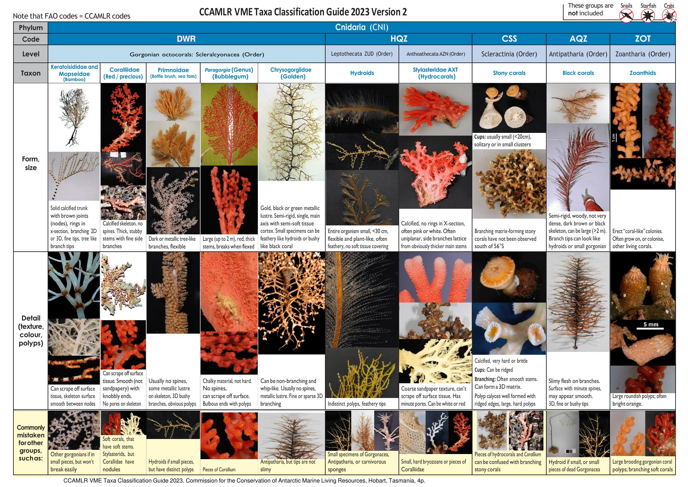
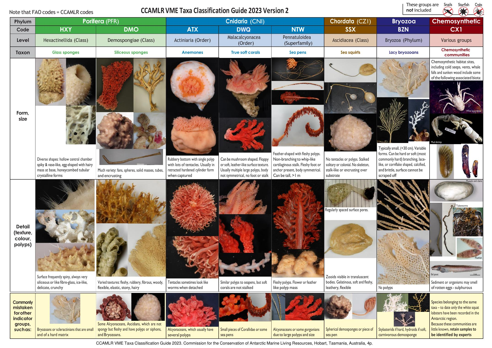
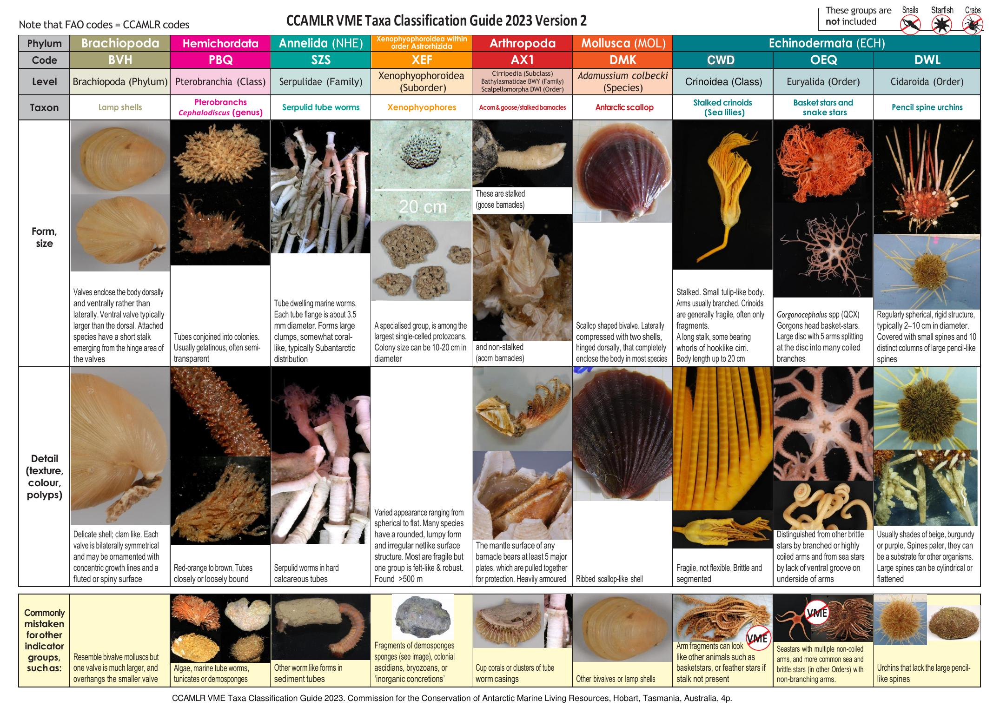
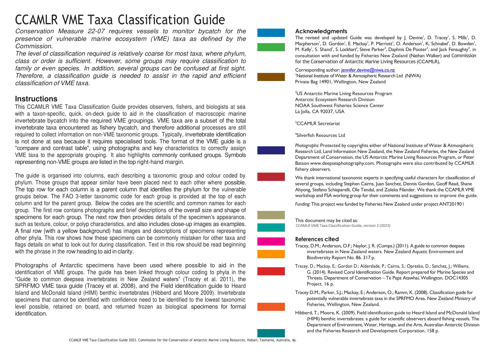

VME
7.1 CCAMLR VME Taxa Classification Guide 2023, версія 2
📄 Файл:
CCAMLR_VME_guide_2023V2.pdf
↗ Відкрити
⬇ Завантажити
Офіційний візуальний визначник таксонів-індикаторів вразливих морських екосистем (Vulnerable Marine Ecosystems). Складається з 3 сторінок-таблиць «Тип → Код → Рівень → Таксон» з описом форми, розміру, текстури та типових помилок ідентифікації, і 4-ї сторінки з інструкцією використання та подяками. Таблиці наведено повністю нижче як зображення, а звірений трилітерний код кожної групи — у таблиці розділу 7.2.




Як користуватися визначником (за офіційною інструкцією)
- Рівень класифікації здебільшого грубий: для більшості таксонів достатньо визначити тип, клас або ряд. Але деякі групи потребують визначення до родини чи навіть виду (наприклад, антарктичний гребінець Adamussium colbecki — окремий вид-індикатор).
- Таблиця організована колонками: кожна колонка — одна таксономічна група, кольорово закодована за типом (phylum). Схожі між собою групи розміщено поруч, щоб їх було легше порівняти.
- Трилітерний код FAO = код CCAMLR для цих таксонів — той самий код можна шукати в аркуші «CCAMLR codes» форми C2 (розділ 3.1).
- Рядок «Form, size» — загальний розмір і форма зразка; рядок «Detail» — текстура, колір, особливості поліпів; нижній рядок (жовтий фон) — з чим цю групу часто плутають і на що звертати увагу.
- Якщо зразок неможливо ідентифікувати з упевненістю — визначте до найнижчого можливого таксономічного рівня, збережіть на борту та поверніть замороженим як біологічний зразок для формальної ідентифікації фахівцями.
Явно виключені з індикаторних груп ВМЕ (зазначено на кожній сторінці визначника позначками «not included»), попри те що це поширений прилов:
- Равлики / черевоногі молюски (Snails)
- Морські зірки (Starfish, клас Asteroidea) — увага: це стосується лише «справжніх» морських зірок; кошикові зірки та змієхвістки (Euryalida, клас Ophiuroidea, код OEQ) до індикаторів ВМЕ належать і НЕ виключені
- Краби (Crabs)
7.2 Повна таблиця кодів таксонів-індикаторів (звірено за зображеннями оригіналу)
| Код | Тип (Phylum) | Рівень | Загальна назва |
|---|---|---|---|
| DWR | Cnidaria (CNI) | Scleralcyonacea (ряд) | Горгонарії (октокорали): бамбукові, червоні/коштовні, щіткоподібні/віялові, «бабл-гам», золоті корали |
| HQZ | Cnidaria (CNI) | Leptothecata / Anthoathecata (ряди) | Гідроїди та Stylasteridae (гідрокорали) |
| CSS | Cnidaria (CNI) | Scleractinia (ряд) | Кам'янисті (стійкі) корали |
| AQZ | Cnidaria (CNI) | Antipatharia (ряд) | Чорні корали |
| ZOT | Cnidaria (CNI) | Zoantharia (ряд) | Зоантарії (колоніальні актинії) |
| HXY | Porifera (PFR) | Hexactinellida (клас) | Скляні губки |
| DMO | Porifera (PFR) | Demospongiae (клас) | Кремнієві губки |
| ATX | Cnidaria (CNI) | Actiniaria (ряд) | Анемони |
| DWQ | Cnidaria (CNI) | Malacalcyonacea (ряд) | Справжні м'які корали |
| NTW | Cnidaria (CNI) | Pennatuloidea (надродина) | Морські пера |
| SSX | Chordata (CZ1) | Ascidiacea (клас) | Асцидії (морські шприци) |
| BZN | Bryozoa | Bryozoa (тип) | Мереживні мохуватки |
| CX1 | Хемосинтетичні угруповання | Різні групи | Холодні джерела, гідротермальні виходи, туші китів, затонула деревина |
| BVH | Brachiopoda | Brachiopoda (тип) | Плеченогі (лампові мушлі) |
| PBQ | Hemichordata | Pterobranchia (клас), рід Cephalodiscus | Птеробранхії |
| SZS | Annelida (NHE) | Serpulidae (родина) | Серпулідні трубчасті черви |
| XEF | Xenophyophoroidea | Ряд Astrorhizida (підряд) | Ксенофіофори (найбільші одноклітинні організми) |
| AX1 | Arthropoda | Cirripedia: Bathylasmatidae / Scalpellomorpha | Жолудеві та гусячі (стеблові) вусоногі раки |
| DMK | Mollusca (MOL) | Adamussium colbecki (вид) | Антарктичний гребінець |
| CWD | Echinodermata (ECH) | Crinoidea (клас) | Стеблові морські лілії |
| OEQ | Echinodermata (ECH) | Euryalida (ряд) | Кошикові зірки та змієхвістки |
| DWL | Echinodermata (ECH) | Cidaroida (ряд) | Олівцеві морські їжаки |
Коментар: Ця таблиця відсутня в текстовому шарі оригінального PDF (там лише зображення-інфографіка) — коди вручну звірено з високороздільними зображеннями кожної з 3 сторінок-таблиць, щоб уникнути помилок автоматичного розпізнавання складної багатоколонкової верстки.
7.3 Ключові терміни та вимоги
- Одиниця-індикатор ВМЕ (VME indicator unit) — 1 літр організмів у 10-літровому контейнері АБО 1 кг для тих, що не поміщаються в об'єм (наприклад, гіллясті види).
- Сегмент лінії — 1000-гачкова секція ярусу або 1200-метрова секція (яка коротша); для пасток — 1200 м.
- Тригерний рівень — 5 і більше одиниць-індикаторів на сегмент лінії вимагають обов'язкового відбору проб («Trigger» sample type).
- Ризикова зона (Risk Area) — зона радіусом 1 морська миля від середини сегмента лінії, з якого вилучено 10 і більше одиниць-індикаторів ВМЕ.
- Спостерігач вибирає випадково ≈30% сегментів лінії для перевірки («Random» sample type), незалежно від тригерної вибірки.
Регулюючі заходи: CM 22-06 / 22-07 — донний промисел і потенційні ВМЕ; CM 22-09 — захист зареєстрованих ВМЕ у відкритих для донного промислу районах.
Коментар: Примітка документа: коди FAO збігаються з кодами CCAMLR для цих таксонів — тобто аркуш «CCAMLR codes» у формі C2 (розділ 3.1) можна використовувати для перевірки кодів ВМЕ-таксонів так само, як і для риб.